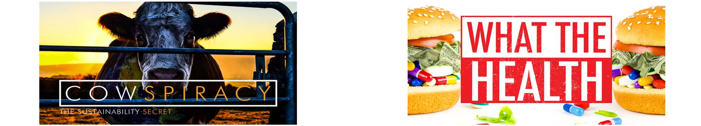
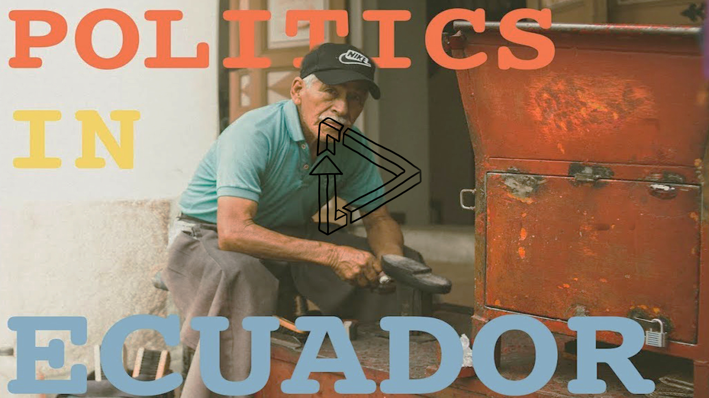

Tylerisyoung.Substack.com
Twitter.com/TylerisYoung
_________________________
06/01/2017
In Partnership With AUM FILMS:

In partnership with AUM Films, and Kip Anderson who starred in and directed the films “What the Health,” and “Cowspiracy,” I went to the Ecuadorian Amazon with four young and ambitious environmentalists, and we set out to make a film. We didn’t know what we were getting into, but we were sure that it needed to include our wonderous journey through a foreign place, the locals, the beauty and biodiversity that was constantly surrounding us, the environmental concerns of the region, and most importantly, it needed to be a testament to our growth as tourists, environmentalists, and as humans. This is our story.
For a country smaller than Arizona, it is amazing how much biodiversity is contained within the flourishing country of Ecuador on the western coast of South America. It is one of the most biologically diverse countries in the world, and home to thousands of endemic species sprawling from the Galapagos to the Amazon. The dry coastal plains are home to Darwin’s Finches, blue footed boobies, papayas, and countless variants of delicious fruits. Moving up towards the Andes is the cloud forest which remains covered with beautiful butterflies, toucans, and yet to be discovered orchid species in a now diverse field pioneered by anthropologist and botanist, Richard Schultes. The snow capped Andes and the capital of Quito are a subtle reminder of the Spanish conquest centuries prior, though many indigenous people have remained happily in their way of life sustaining farming off the land through slash and burn practices, herding llamas, and drinking the maize based Chicha.
Then there is the Amazon, where I spent most of my time. A place so ominous that people make jokes about it, their jaws drop when I tell them I spent more than 8 months there in my hammock. They ask if I am doing okay after catching Dengue Fever, and they say they could never do it. I tell them I wasn’t sure that I could either, but life is about pushing yourself, finding your limits then asking, “Why stop there?”
(28:53)
